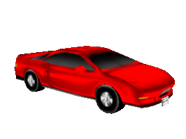

Panda3D Manual: Car red.png
{kind=link}
{kind=link}
{kind=link}

{kind=link}
No higher resolution available.
Car_red.png (267 × 200 pixels, file size: 24 KB, MIME type: image/png)
carnsx.egg with red texture
This image was generated by the following program:
from direct.directbase.DirectStart import *
from pandac.PandaModules import *
car = loader.loadModel('bvw-f2004--carnsx/carnsx.egg')
car.reparentTo(render)
base.setBackgroundColor(1, 1, 1, 1)
base.disableMouse()
camera.setHpr(0, -11, 0)
camera.setPos(0, -7, 2)
car.setX(-0.5)
car.setH(50)
base.graphicsEngine.renderFrame()
base.screenshot('car_red.png', defaultFilename = 0)
blue = loader.loadTexture('bvw-f2004--carnsx/carnsx-blue.png')
car.find('**/body/body').setTexture(blue, 1)
car.find('**/body/polySurface1').setTexture(blue, 1)
car.find('**/body/polySurface2').setTexture(blue, 1)
base.graphicsEngine.renderFrame()
base.screenshot('car_with_blue.png', defaultFilename = 0)
|
File history
Click on a date/time to view the file as it appeared at that time.
| Date/Time | Thumbnail | Dimensions | User | Comment | |
|---|---|---|---|---|---|
| current | 17:48, 4 October 2005 | 267 × 200 (24 KB) | Drwr (Talk | contribs) | ||
| 17:44, 4 October 2005 |  | 267 × 200 (24 KB) | Drwr (Talk | contribs) | carnsx.egg with red texture |
- Edit this file using an external application (See the setup instructions for more information)
{kind=link}
File usage
The following 2 pages link to this file:
{kind=link}
| Back to the Manual |
© Carnegie Mellon University 2010